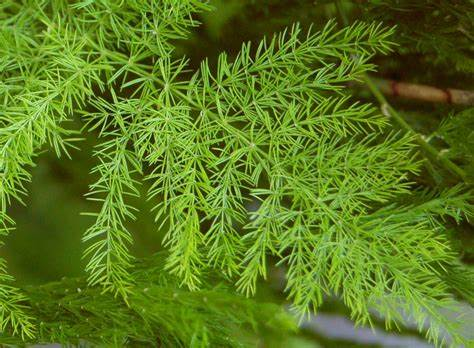

Basonym of Drug
Shatavari
Main Synonym
- Satavri
- Shatamuli
- Bahusuta
- Vari
- Narayani
- Shatapadi
- Pivari
- Indivari
- Bhiru
- Shatvirya
Regional Name
- Bengali: Shatamuli
- Gujarati: Shatavari
- Hindi: Satavar, Satmuli, Sarnoi
- Marathi: Shatavari
- Tamil: Amukarapaniyanaku
- Telugu: Pennerupillipichara
Botanical Name
Asparagus racemosus Willd
Family
External Morphology
A woody climbing undershrub
Useful Parts
Important Phytoconstituent
- Beta-sitosterol
- Sarsapogenin
- Diosenin
- Asparagines
- Flavonoids
- Rutin
- Spirogenin
- Furostanolic Saponins
Rasa Panchak
- Rasa: Madhura, Tikta
- Guna: Guru, Snigdha
- Virya: Shita
- Vipaka: Madhura
Action
Therapeutic Indication
- Balya (Stamina Booster)
- Rasayana (Rejuvenation)
- Sukrala (Aphrodisiac)
- Vayasthapana (Anti-aging)
- Stanyajanana (Galactogogue)
- Raktapittahara (Treat Bleeding Disorders)
Therapeutic Uses
- Avipaka: Leaves food preparation is given in indigestion.
- Dorbalya: Root powder with rock sugar and milk is given in debility.
- Sandhivata: In arthritic pain, oil prepared with Shatavari is used for both external and internal use.
Dose
- Powder - 3-6 gm
- Decoction - 40-80 ml
- Fresh Juice - 10-20 ml
Formulations
- Shatavari Ghrita
- Shatavari Guda
- Shatavari Kalpa
- Narayana Taila
Adverse Effect
Not Known
Remedial Measure
Not Required